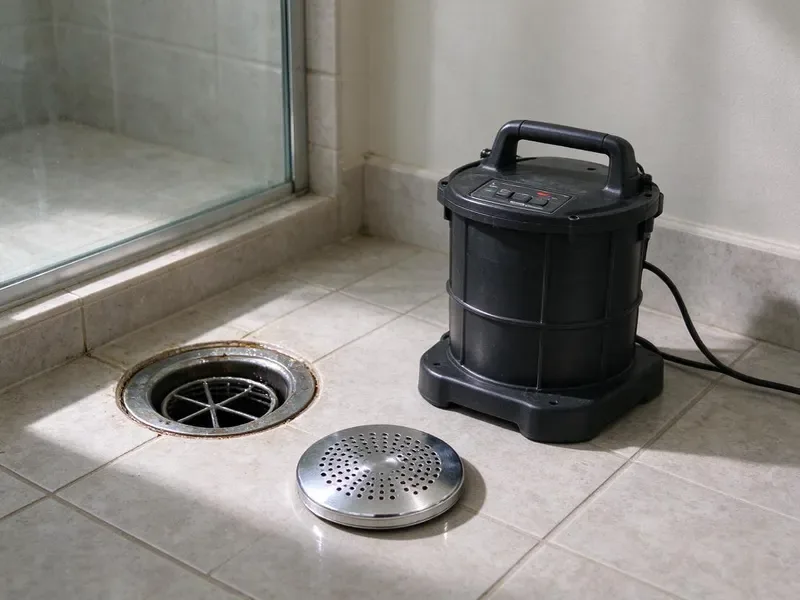

Storm Drain Cleaning in Gadsden, AL
Don't let clogged storm drains cause problems around your Gadsden, AL property. Our team delivers professional storm drain cleaning services to ensure proper water flow.
- Fast Response Times
- Licensed Plumbers
- Advanced Equipment
- Upfront Pricing

Expert Storm Drain Cleaning Services Available in Gadsden, AL.
Contact BRV Plumbing now for a free estimate and reliable plumbing solutions.
Professional Storm Drain Cleaning in Gadsden, AL
BRV Plumbing specializes in comprehensive storm drain cleaning services for homes and businesses across Gadsden, AL. From removing leaves and debris to tackling stubborn root intrusions, we ensure your storm drainage system functions flawlessly, protecting your property from water damage.
Our expertise includes:
- Clear blockages from leaves, silt, and debris.
- Remove root intrusions using specialized cutters.
- Inspect and maintain catch basins and grates.

Additional Drain Services Services in Gadsden, AL
From stubborn kitchen clogs to main sewer backups, our drain services in Gadsden, AL restore full flow fast and keep it that way.


Customers
Why Choose BRV Plumbing for Storm Drain Cleaning in Gadsden, AL?
Our commitment to quality and customer satisfaction sets us apart, ensuring your storm drains are always ready for whatever Alabama weather brings.
- Prevent Flooding, Regular cleaning prevents water accumulation that can damage foundations and landscapes during heavy rains.
- Property Protection, Clear drains protect driveways, walkways, and other exterior structures from erosion and cracking caused by standing water.
- Code Compliance, We ensure your storm drainage system meets local Gadsden, AL plumbing codes, preventing potential fines or issues.
Citywide Coverage
BRV Plumbing is proud to serve every neighborhood in Gadsden, ensuring that no matter where you are located, expert storm drain cleaning is just a phone call away. Our local teams are familiar with the specific drainage challenges present throughout Gadsden.
Experienced Team
Each technician at BRV Plumbing undergoes rigorous training, focusing on the effective and safe cleaning of storm drains. We pride ourselves on having knowledgeable professionals who can accurately diagnose and resolve even the most complex blockages in Gadsden.
Safety-First Approach
Safety is our top priority for every storm drain cleaning job. We adhere strictly to all local Gadsden, AL plumbing codes and safety regulations, ensuring the work is performed without risk to your property or our team.
Trusted Certified Gadsden Plumbing Services Professionals
At BRV Plumbing, we take pride in providing certified plumbing services throughout Gadsden, AL. Backed by recognized industry credentials, our experienced plumbers combine technical skill with genuine customer care. Whether it is repair, installation, or maintenance, we follow strict safety and quality standards to deliver lasting results you can trust.
Call Us Now PHCC Plumbing Contractor Recognition
PHCC Plumbing Contractor Recognition Better Business Bureau (BBB) Accreditation
Better Business Bureau (BBB) Accreditation Angi Certified Pro
Angi Certified Pro ISO 9001 Quality Management Certification
ISO 9001 Quality Management CertificationEffective Storm Drain Cleaning Services in Gadsden, AL
Residential Storm Drain Cleaning in Gadsden
For homeowners in Gadsden, clogged storm drains can lead to significant issues like flooded yards, damaged landscaping, and even foundation problems. Our residential storm drain cleaning service focuses on removing common culprits like leaves, twigs, dirt, and small debris that accumulate over time. We use specialized tools, including drain snakes and high-pressure water jetting, to ensure your home's drainage system is free-flowing and ready for the next heavy rain. Protecting your property from water damage starts with clear storm drains.

Commercial Storm Drain Maintenance in Gadsden, AL
Businesses in Gadsden, AL rely on effective storm drainage to protect their premises and maintain operations. Commercial storm drains often handle larger volumes of water and can accumulate more substantial debris, including trash, grease, and construction runoff. BRV Plumbing offers comprehensive commercial storm drain cleaning programs, including preventative maintenance schedules, to keep your business safe from flooding and water-related disruptions. We understand the importance of minimal downtime and efficient service for our commercial clients.
Emergency Storm Drain Unclogging in Gadsden
When a sudden downpour reveals a severely clogged storm drain, causing immediate flooding risks, you need fast help. BRV Plumbing provides emergency storm drain unclogging services across Gadsden. Our rapid response team is equipped to handle urgent blockages, using powerful hydro-jetting and advanced snaking tools to restore drainage quickly. Don't let standing water threaten your property's integrity; call us immediately for emergency assistance.
Hydro-Jetting for Storm Drains in Gadsden, AL
Hydro-jetting is one of the most effective methods for clearing tough storm drain blockages in Gadsden, AL. This technique uses highly pressurized water streams to scour the inside of drain pipes, removing stubborn debris, silt, grease, and even tree roots. Unlike traditional snaking, hydro-jetting provides a thorough cleaning, preventing future clogs and restoring the drain to its full capacity. It's an excellent solution for drains experiencing recurring blockages or those with significant buildup.
Root Removal from Storm Drains in Gadsden
Tree roots are a common cause of severe storm drain blockages in Gadsden, especially in older neighborhoods with mature trees. Roots seek out moisture and can infiltrate drain pipes through tiny cracks or loose joints, growing and eventually completely obstructing water flow. BRV Plumbing uses specialized root-cutting attachments on our drain snakes and hydro-jetting equipment to effectively cut through and remove root intrusions. After removal, we can recommend further actions to prevent future root problems.
Catch Basin Cleaning in Gadsden, AL
Catch basins are critical components of any storm drainage system in Gadsden, AL, designed to collect runoff and trap debris before it enters the main drain lines. Regular cleaning of catch basins is essential to prevent them from becoming overloaded and causing blockages further down the system. Our service includes removing accumulated leaves, sediment, trash, and other debris from catch basins, ensuring they function correctly and protect your entire drainage infrastructure. This preventative maintenance is key to avoiding larger issues.
Storm Drain Camera Inspection in Gadsden
Before and after cleaning, or to diagnose the cause of persistent blockages, BRV Plumbing offers storm drain camera inspection services in Gadsden. Using waterproof cameras, we can visually inspect the interior of your storm drain lines to identify the exact nature and location of blockages, assess pipe condition, and check for structural damage like cracks or collapses. This non-invasive diagnostic tool ensures accurate problem identification and allows us to provide the most effective and targeted cleaning or repair solutions.

Preventative Storm Drain Maintenance Plans in Gadsden, AL
For properties in Gadsden, AL prone to frequent storm drain issues, BRV Plumbing offers customized preventative maintenance plans. These plans involve scheduled inspections and cleanings, tailored to your property's specific needs and the local environmental factors. Regular preventative maintenance helps to avoid unexpected emergency blockages, extends the lifespan of your storm drainage system, and saves you money on costly repairs in the long run. Keep your drains clear year-round with our proactive approach.
Storm Drain Cleaning Near Me in Gadsden, AL
If you're searching for reliable storm drain cleaning near me in Gadsden, AL, look no further than BRV Plumbing. Our local teams are strategically positioned to provide prompt and efficient service throughout the metropolitan area and surrounding communities. We pride ourselves on quick response times and effective solutions.
Whether you're dealing with minor clogs or major flooding concerns, our certified plumbers are equipped and ready to assist. We understand the specific drainage challenges faced by properties in Gadsden and offer tailored services to keep your storm drains clear and functioning properly.
BRV Plumbing at a Glance
- Fully licensed plumbing team covering Gadsden, AL
- 24/7 emergency service with same-day scheduling
- Clear written estimates, no hidden fees
- 4.8-star rated by 549+ Alabama customers
Gadsden Map
Gadsden Information
- Population
- 33,229
- Area codes
- Local
- Service area
- Gadsden and communities within 40 miles
- Nearby
- Anniston, Birmingham, Vestavia Hills, Huntsville
Effective storm drain cleaning is crucial for homes in Gadsden, AL, where our humid subtropical climate and heavy rainfall can quickly overwhelm neglected drainage systems, leading to costly property damage and erosion.
Expert Services
Trust our professionals for reliable BRV Plumbing solutions in Gadsden, AL.
Our Specialized Plumbing Services in Gadsden, AL
At BRV Plumbing, we provide a complete range of plumbing services across Gadsden, AL. From leak detection to full system installations, our team ensures fast, precise, and affordable service for both residential and commercial properties. Explore our core services below:


How Our Storm Drain Cleaning Process Works in Gadsden, AL
We follow a systematic approach to ensure your storm drains are completely clear and functioning optimally.
Request a Quote
Contact BRV Plumbing at (256) 391-9413 to describe your storm drain issue and schedule a convenient service appointment. We'll gather necessary details to prepare for your visit.
On-Site Assessment
Our technician arrives, assesses the storm drain system, and identifies the cause and location of the blockage. We may use camera inspection for accuracy.
Effective Cleaning
We use appropriate tools, such as hydro-jetters or drain snakes, to thoroughly clear the blockage and clean the drain pipes. All debris is removed and disposed of properly.
Frequently Asked Questions About Storm Drain Cleaning in Gadsden
The cost of storm drain cleaning in Gadsden typically ranges from $200 to $600, depending on the severity and type of blockage, the length of the drain, and the equipment required (e.g., hydro-jetting vs. snaking). More complex issues like extensive root intrusion or collapsed pipes may incur higher costs. We provide a clear, upfront estimate before starting any work.
In Gadsden, common causes of storm drain clogs include accumulated leaves, dirt, and organic debris from our trees, silt and sediment from soil erosion, trash, and unfortunately, sometimes even illegally disposed-of waste. Tree root intrusion into the pipes is also a significant factor, especially in older systems.
Yes, BRV Plumbing stands behind our work. We offer a warranty on our storm drain cleaning services, ensuring that if a cleared drain re-clogs within a specific timeframe due to the same issue, we will return to address it. Specific warranty details will be provided with your service agreement.
Generally, routine storm drain cleaning does not require special permits in Gadsden. However, if the cleaning uncovers a need for significant repair, excavation, or connection to public storm sewer lines, then permits from the local municipality or water authority may be necessary. We will advise you if any permits are required for your specific situation.
To prevent storm drain clogs, regularly clear leaves and debris from grates and catch basins, avoid planting trees directly over drain lines, and ensure proper landscaping to prevent soil erosion. Consider installing grates with smaller openings in high-debris areas and schedule annual professional cleanings.
We utilize a range of professional-grade equipment, including powerful hydro-jetting machines that use high-pressure water to scour pipes, advanced drain snakes with various cutting heads for root removal, and waterproof camera inspection systems to accurately diagnose issues and ensure thorough cleaning.
While you can clear minor surface debris from grates, deeply clogged storm drains often require professional equipment like high-pressure hydro-jetters or specialized drain snakes. Attempting to clear severe blockages yourself can be ineffective and potentially damage your drainage system, leading to more costly repairs.
Common signs include water pooling around your property after rain, slow drainage from downspouts, visible debris accumulating at catch basin grates, and unusual odors coming from the drains. If you notice any of these, it's a good idea to have your storm drains inspected.
What People Are Saying About Our Plumbing Experts?

Patricia H.
We had a slab leak that two other companies could not find. BRV Plumbing located it in under an hour, explained our options, and the price matched the quote to the dollar.
Slab Leak Repair · Vestavia Hills, AL
Robert G.
The trenchless sewer replacement saved our front yard. They walked us through the camera inspection footage first so we knew exactly what we were paying for.
Sewer Line Replacement · Huntsville, ALJames P.
Our commercial plumbing system had a leak under the sink, and BRV Plumbing handled it professionally. The plumbers arrived quickly and restored everything without disruption to our customers.
Commercial Plumbing · Vestavia Hills, AL
Sofia M.
Two new toilets installed in one visit, no mess left behind, and the tech even adjusted a faucet he noticed was dripping. Fair pricing and really friendly.
Toilet Installation · Madison, AL
Daniel K.
A pipe burst at 11 pm and they actually answered. The plumber showed up within the hour, shut everything down, and had us back to normal the next morning. Could not ask for more.
Emergency Plumbing · Gadsden, AL
Mark T.
When our office needed drain cleaning, BRV Plumbing provided quick, reliable service. The plumber arrived on time and made sure every drain flowed perfectly before leaving. Very satisfied.
Drain Cleaning · Vestavia Hills, AL